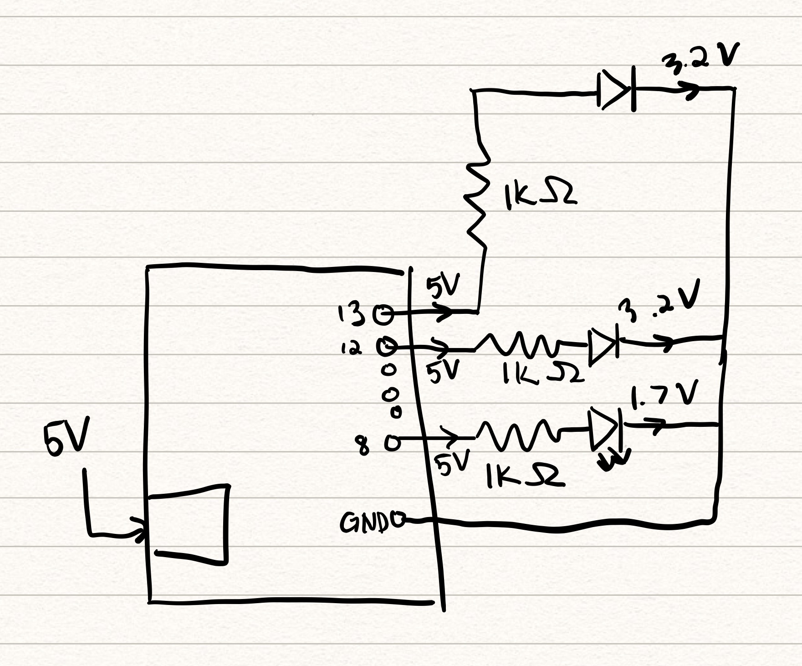
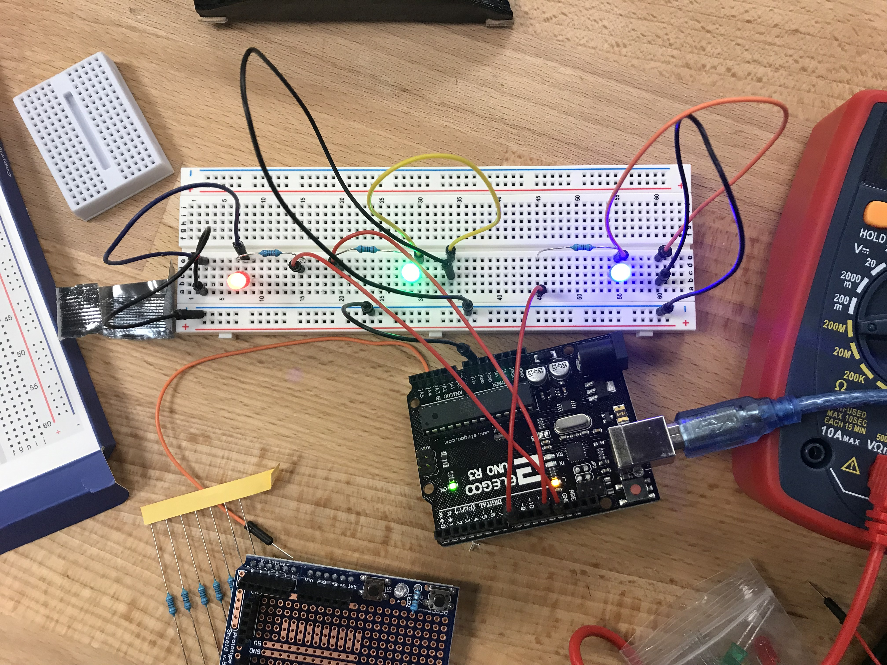

Assignment 1: Blink
Schematic

I picked 1K ohms for the resistors because it exceeded the amount I calculated to not exceed the maximum current for the LEDs. The red and green LED needed at least 160 ohms of resistance, and the blue LED needed at lease 85 ohms of resistance.
Circuit

Here is a picture of my circuit. If I were to do this assignment again, I would make the wires more organized, as it kinda looks like a mess. But it works!
Code Snippet
// the setup function runs once when you press reset or power the board
void setup() {
// initialize digital pin LED_BUILTIN as an output.
pinMode(13, OUTPUT); //initialize 13 pin
pinMode(12, OUTPUT); //initialize 12 pin
pinMode(8, OUTPUT); //initialize 8 pin
}
// the loop function runs over and over again forever
void loop() {
digitalWrite(13, HIGH); // turn on red LED
delay(500); //delay for .5 sec
digitalWrite(12, HIGH); // turn on green LED
delay(500); //delay for .5 sec
digitalWrite(8, HIGH); // turn on blue LED
delay(500);
digitalWrite(13, LOW); // turn off red LED
digitalWrite(12, LOW); // turn off green LED
digitalWrite(8, LOW); // turn off blue LED
delay(500); // delay for .5 sec
}
Here it is in Action!